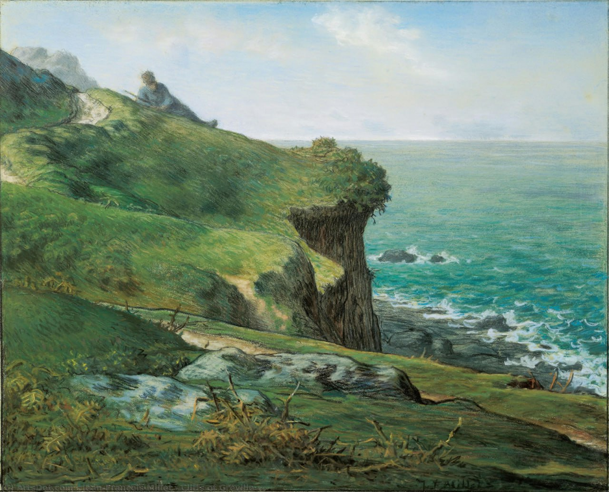

Жан-Франсуа МиллеFalaises de Gréville (Скалы Гревиля), 1871📄 Бумага 🖌 пастель 📏 43,7 x 54,1 см🏛 Музей искусств Охара, КурасикиИсточники:https://web.archive.org/web/20210924181058/http://www.ohara.or.jp/201001/jp/C/C3a25.html2025-12-24#millet #ohara_museum_of_art #картина